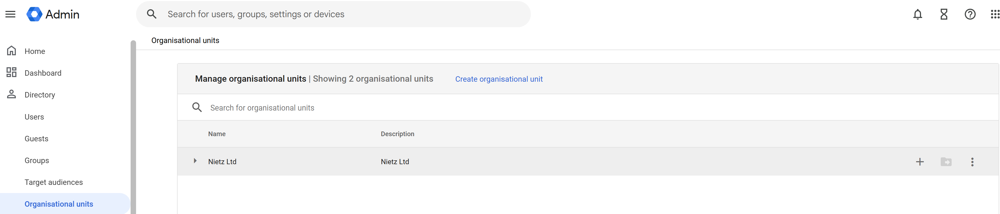

Overview
This section demonstrates the design and implementation of organisational units (OUs) within Google Workspace.
The OU structure was built to reflect a realistic business environment, enabling structured user management, hierarchical policy inheritance, and clearer separation between departments and privileged roles.
Initial OU State
The environment initially contained only the root organisational unit. This provided the starting point for building a more structured hierarchy.

Initial organisational unit overview showing the root OU
OU Creation
Organisational units were created in the Admin console by defining the OU name, description, and parent OU.
- Name
- Description
- Parent organisational unit
This allows administrators to build a hierarchical structure for both users and policies.

Example of creating a new organisational unit in the Admin Console
OU Structure
The following organisational unit hierarchy was implemented to reflect a realistic business layout:
- Root: Nietz Ltd
- IT
- Admins
- Helpdesk
- HR
- Finance
- Sales
- Management

Final organisational unit hierarchy configured in Google Workspace
Design Approach
The OU structure was designed to support both administration and security. Departments were separated logically, while privileged IT roles were isolated from standard users to support clearer access control.
- Separate users by department such as HR, Finance, and Sales
- Isolate privileged accounts such as IT Admins and Helpdesk
- Support scalable organisational growth
- Enable policy inheritance across the hierarchy
Policy Inheritance
Policies applied at higher-level organisational units automatically cascade down to child OUs unless explicitly overridden.
OU inheritance allows security and configuration settings to be managed centrally while still supporting stricter controls for specific teams or privileged accounts.
- Centralised control for root-level settings
- Granular overrides for sensitive groups such as Admins
- Reduced administrative overhead
Summary
- Implemented a realistic organisational unit hierarchy
- Separated users by department and role
- Applied scalable structure aligned to business needs
- Demonstrated understanding of policy inheritance